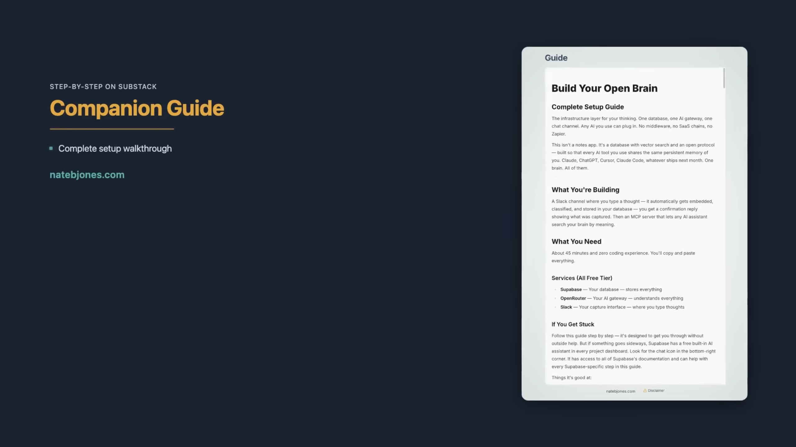
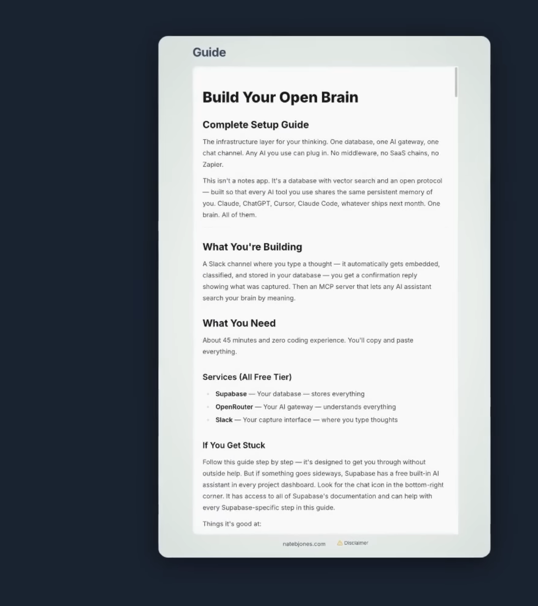

a vibe coding story
The usual answer is Obsidian.
Obsidian is good. Notes, links, graph view, markdown. Local files. You own your data.
But Obsidian is a notes app. Your AI assistant doesn't know what's in it. Every new conversation starts from zero.
What if every AI tool you use — Claude, ChatGPT, Cursor, whatever ships next month — shared the same persistent memory of you?
Not a notes app. An infrastructure layer.
One database. One open protocol. Any AI can plug in.
Nate B Jones — "Build Your Open Brain" (Substack + YouTube)
His challenge: "I showed enough in the video that you could vibe code your own solution."
(YouTube, starts at 1:48 — the companion guide appears on screen)

I could see it. I didn't download it. That was enough.

Build Your Open Brain — Complete Setup Guide
The infrastructure layer for your thinking. One database, one AI gateway, one chat channel. Any AI you use can plug in. No middleware, no SaaS chains, no Zapier.
This isn't a notes app. It's a database with vector search and an open protocol — built so that every AI tool you use shares the same persistent memory of you. Claude, ChatGPT, Cursor, Claude Code, whatever ships next month. One brain. All of them.
A Slack channel where you type a thought — it automatically gets embedded, classified, and stored in your database — you get a confirmation reply showing what was captured.
Then an MCP server that lets any AI assistant search your brain by meaning.
Services (all free tier):
Time estimate:
~45 minutes, zero coding experience, copy-paste everything.
I subscribe to Nate's Substack. The full companion guide is sitting in my inbox.
I never opened it.
Instead I took the screenshot, opened Claude Code, and said:
"Explain this and help me build it for my setup."
Everything from here is what came out of that conversation.
Obsidian (and every notes app) has a handoff problem.
Open Brain removes the handoff. The AI is connected to your memory. Always.
(the piece I had to have explained)
You send text to an API. You get back a list of ~1500 numbers — a vector.
response = client.embeddings.create(
model="text-embedding-3-small",
input="I want to learn piano"
)
vector = response.data[0].embedding # 1536 floats
# [0.023, -0.411, 0.087, 0.342, ...]
You never look at the numbers. You store them next to the original text.
When you search, you embed the query the same way — same 1500-number format.
Then find which stored vectors are geometrically close.
"music hobbies" → finds notes about piano, even if you never typed "music"
Matches by meaning, not keywords. That's the whole trick.
The model you use for storing and searching must be the same — different models produce incompatible spaces.
| Component | Nate's guide | My version |
|---|---|---|
| Capture | Slack | Telegram (already have a bot) |
| AI gateway | OpenRouter | OpenRouter |
| Database | Supabase + pgvector | Supabase + pgvector |
| Hosting | (unspecified) | Home server, runs 24/7 |
| Language | (unspecified) | Python |
Substituting Telegram for Slack was the main adaptation. Everything else follows Nate's design.
MCP (Model Context Protocol) is an open standard. An AI tool that supports MCP can call tools you expose.
The MCP server hides all the embedding machinery. A calling model just sends plain text, gets plain text back:
search_brain("what have I said about learning music?")→ [returns relevant memories as text]
Claude, ChatGPT, Cursor — any of them can call this without knowing or caring about vectors.
Just a Postgres database. pgvector is an extension, not a separate service.
Working capture pipeline. Type a thought, it lands in your brain.
The payoff. Now every AI tool you use can search your memory.
The guide gets you a capture-and-search system for new thoughts.
I have 20 years of old data to bring into it.
Since the early 2000s I've saved copies of web pages I found interesting — a kind of personal archive.
That's 10,000–20,000 pages. No labels, no categories. Just "past me thought this was worth keeping."
Embed all saved pages → load them into Open Brain
For any new article or Hacker News post:
No training step. No labels. Your 20-year curation history is the model.
This was not in Nate's guide. It came out of the same conversation about what I could do with this architecture.
ChatGPT export
Settings → Data Controls → Export
Years of conversations in one JSON file. Probably under a few hundred MB. Cost to embed it all: under $1.
Embed only your own messages for purest personal signal.
Anything else you've typed
Obsidian vault, old emails, journal entries, bookmarks, browser history...
If it's text, it's embeddable. If it's yours, it's signal.
In another project I'm tracking search results across hundreds of drug-related terms. A lot of what comes back is irrelevant — wrong context, wrong audience, passing mentions in lists.
Solution: embed a set of known-good, verified articles as seeds. Score each incoming article by cosine similarity against those seeds.
Cost of the embedding relevance check: ~$0.02/month. Built it because I understood how embeddings work.
I'm a competent technical person. But I had never worked with embeddings before. So I didn't just ask Claude to build it — I asked it to explain it first. Several rounds of questions.
It explained embeddings, the consistency rule, why pgvector isn't a special service, what MCP actually does. And then it offered to help build it too.
That explain step matters. Without it you're cargo-culting code you don't understand. Then your embedding model gets deprecated, you think you've lost everything, and you have no idea why you're safe (the text is the real data — you can re-embed). Or you switch models and can't figure out why search broke.
The code hasn't been written yet. That's next. But the architecture is solid.
| Thing | Barrier |
|---|---|
| Supabase account | Free tier, 5 minutes to create |
| OpenRouter account | Free tier, pay-as-you-go for embeddings (pennies) |
| Python | ~50 lines for the ingest handler |
| Somewhere to run it | Home server, VPS, Raspberry Pi, Render free tier |
| MCP host | Claude Desktop or any MCP-compatible client |
Nate's guide is step-by-step copy-paste — no AI help, no coding experience needed, ~45 minutes by hand. With Claude Code cranking out the code from the architecture, probably faster.
Google Desktop Search (2004–2011) was the previous attempt at this idea — index your own files, search them locally.
Google killed it in 2011. Probably a combination of privacy distrust and the rise of cloud storage.
Open Brain is the modern version: semantically richer (meaning-based, not keyword), more open (any AI can query via MCP), and ownable (you control the full stack).
The core is just: your text, embedded, searchable by any AI you use.
Starting points:
We're building a simple version of current commercial products like Living Brain.
github.com/buck/open-brain-workshop
Make an empty folder, open your coding agent in it, and type:
Read https://raw.githubusercontent.com/buck/open-brain-workshop/main/prompt.txt and follow it.
No programming, no git. A free coding agent (OpenCode) plus free Supabase and Voyage AI accounts.
| 🛠 | Workshop starter | buck/open-brain-workshop accounts to make, the prompt, and what to watch out for |
| ▶ | The video | Nate B Jones — Build Your Open Brain starts at 1:48 — the guide appears on screen |
| 📄 | Companion guide, page 1 | open_brain_guide.md the full text from the image in the video |
| 📋 | Architecture notes | session_notes.md the plan that came out of the conversation with Claude |